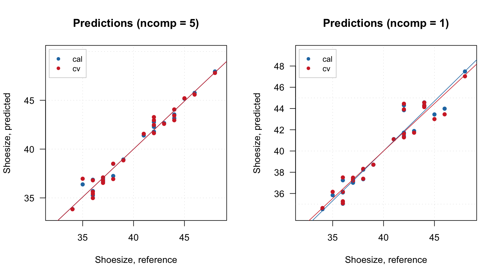
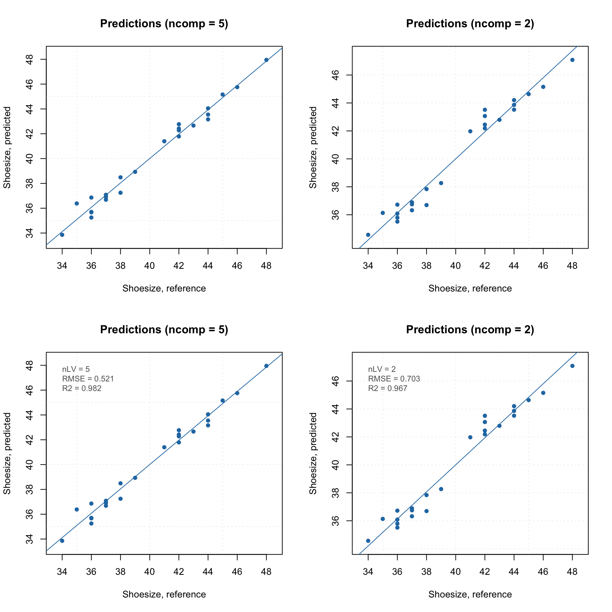
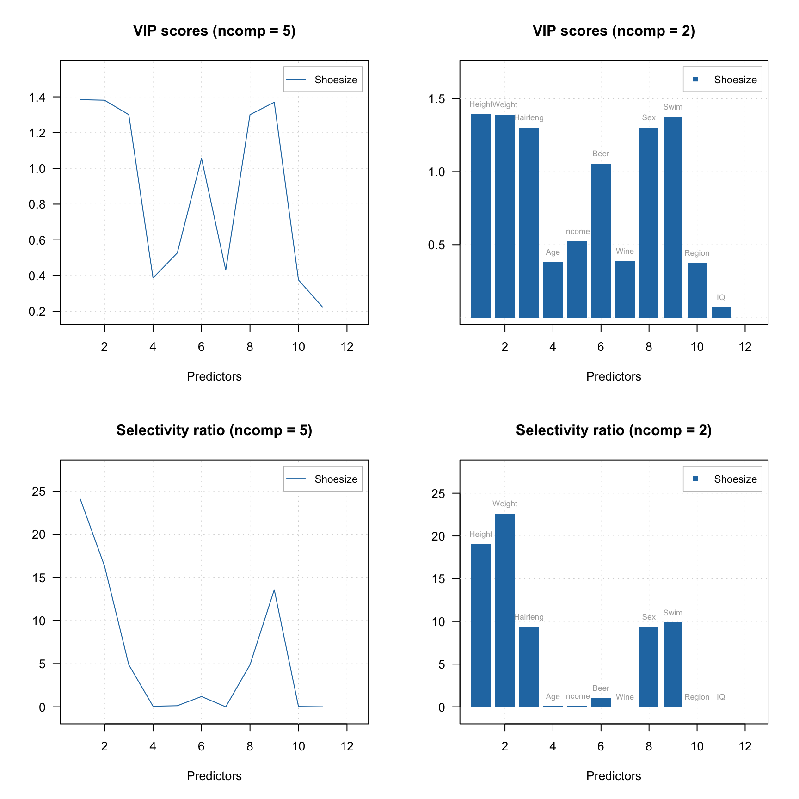
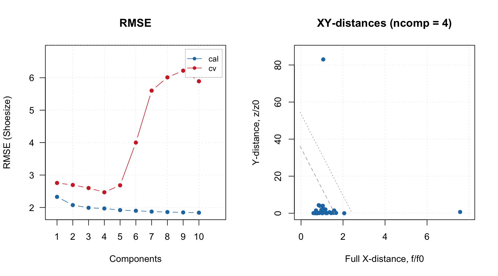
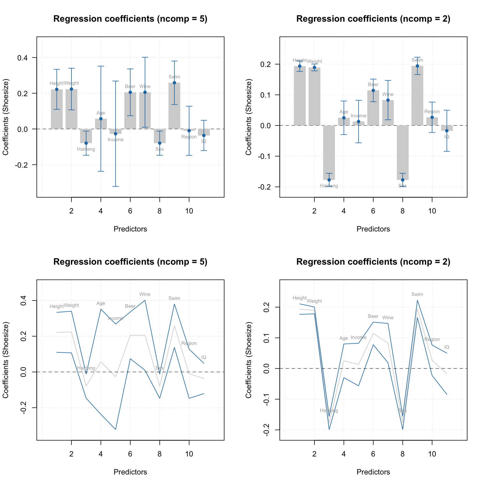

Distances and outlier detection
Distance plot for X-decomposition
For decomposition of X-values the orthogonal and score distances are computed and treated in the same way as in PCA. The pls() constructor takes the three arguments for computing the critical limits, similar to PCA (lim.type, alpha, gamma). The default value for lim.type is the same as for PCA ("ddmoments"). Distance plot can be made using plotXResiduals(), it works identical to plotResiduals() for PCA.
Below is example on how to use the plot.
m = pls(Xc, yc, 4, scale = TRUE, cv = 1)
par(mfrow = c(2, 2))
plotXResiduals(m)
plotXResiduals(m, ncomp = 2, log = TRUE)
plotXResiduals(m, ncomp = 2, res = list("cal" = m$res$cal))
plotXResiduals(m$res$cal)
PLS also has function categorize() which allows to identify extreme objects and outliers. However, it works in a different way and takes into account not only total distances for X-decomposition but also similar measure for decomposition of Y. This is explained in following sections.
Distance plot for Y-decomposition and total distance
The distance for Y-decomposition is calculated in a different way — as a difference between predicted and reference y-values. The difference for selected y-variable is expected to be random and normally distributed. It can be checked visually by using function plotYResiduals() as shown in example below. In this plot the difference is plotted against the reference value.
par(mfrow = c(2, 2))
plotYResiduals(m)
plotYResiduals(m, ncomp = 2)
plotYResiduals(m, ncomp = 2, res = list("cal" = m$res$cal))
plotYResiduals(m$res$cal)
Since predictions are also computed for cross-validation, the plot shows the distance values for cross-validated results.
The distance between reference and predicted values can be used to compute orthogonal squared distance, similar to how it is done for X-decomposition, as it is shown below:
\[ z_i = \sum_{k = 1}^K (y_{ik} - \hat{y}_{ik})^2 \]
Here \(y_{ik}\) is a reference value for sample \(i\) and y-variable \(k\) and \(\hat{y}_{ik}\) is the corresponding predicted value, \(K\) is the number of y-variables. Apparently, \(z\) values also follow chi-square distribution similar to how it is done in PCA:
\[N_z \frac{z}{z_0} \propto \chi^2(N_z)\]
In case of PLS1 (when there is only one y-variable), \(N_z = 1\). Otherwise, both \(z_0\) and \(N_z\) are computed using data driven approach, similar to \(q_0\), \(N_q\), \(h_0\), \(N_h\), using either classical (based on moments) or robust approach.
Full distance for X-decomposition, \(f\) and the Y-distance, \(z\) can be combined into XY total distance, \(g\):
\[g = N_f\frac{f}{f_0} + N_z\frac{z}{z_0} \propto \chi^2(N_g)\]
Here \(N_g = N_f + N_z\). This approach was proposed by Rodionova and Pomerantsev and described in this paper. The distances and the critical limits can be visualized using function plotXYResiduals() as illustrated in the next example.
The example is based on People data (prediction of shoesize), however we will first introduce two outliers. We will change response value for row #9 to 25, which is apparently too small value for shoesize of an adult person. The predictor values will be the same. Then we will change height of first person (row #1) to 125 cm, which is again quite small value. And keep the response value unchanged. After that, we create a PLS model with classic data driven approach for computing critical limits and show the XY-distance plot. Finally, that we change the method for limits to robust and show the plot again:
# prepare data
data(people)
X = people[, -4]
y = people[, 4, drop = FALSE]
# add outliers
y[9] = 25
X[1, 1] = 125
# create model and show plots
m = pls(X, y, 4, scale = TRUE, cv = 1, lim.type = "ddmoments")
par(mfrow = c(1, 2))
plotXYResiduals(m, show.labels = TRUE, labels = "indices")
m = setDistanceLimits(m, lim.type = "ddrobust")
plotXYResiduals(m, show.labels = TRUE, labels = "indices")
As one can see, both classic and robust approach detect sample number 9 (with wrong y-value) as a clear outlier. Using robust approach helps to identify the second outlier as well. However, you can see that the location of the two samples is different — sample #9 has large Y-distance (\(z/z_0\)), while sample #1 has large full X-distance (\(f/f_0\)). Which is in agreement with the way we created the outliers.
The limits shown on the plot are made for the total distance, \(g\). For example, to detect outliers we need to compare the total distance, \(g\), with critical limit computed for predefined significance level, \(\gamma\) (shown as dotted line on the plots):
\[g > \chi^{-2} \big( (1 - \gamma)^{1/I}, N_g \big) \]
The proper procedure for detection and removing outliers can be found in the paper and will be very briefly touched upon here. The detection can be done using function categorize() which works similar to the same function for PCA decomposition — returns vector with categories for each measurement, as shown in an example below:
c = categorize(m, m$res$cal)
print(c)## [1] outlier regular regular regular regular regular
## [7] extreme regular outlier regular regular regular
## [13] regular regular regular regular regular extreme
## [19] regular regular regular regular regular regular
## [25] regular regular extreme regular regular regular
## [31] regular regular
## Levels: regular extreme outlierA simplified description of the recommended procedure proposed in the mentioned paper is following:
- Make a PLS model with robust estimator of critical limits
- Detect outliers if any, remove them and keep the removed objects separately
- Repeat steps 1-2 until no outliers are detected
- Apply model to the collected outliers (use
predict) - If any of them appear as regular objects, return them back to the dataset and go to step 1
- Repeat all steps until step 5 does not reveal any regular objects
- Make a final PLS model using classic estimator for the critical limits
If test set validation is used, the outlier detection should be done for both sets. And it is of course important to use optimal number of components, which can be identified using RMSE plot and plot for explained Y-variance.
The code chunks below show the steps for detection of outliers in the People data used in an example earlier. We start with creating PLS model for the whole data.
# prepare data
data(people)
X = people[, -4]
y = people[, 4, drop = FALSE]
# add outliers
y[9] = 25
X[1, 1] = 125
# compute initial PLS model with all data
m = pls(X, y, 10, scale = TRUE, cv = 1, lim.type = "ddrobust")
# look at RMSE and XY-residuals plot
par(mfrow = c(1, 2))
plotRMSE(m)
plotXYResiduals(m)
Apparently four components selected automatically is indeed a proper value. The XY-distance plot shows that we have two outliers, let’s find and remove them:
# get row indices for outliers in calibration set
outliers = which(categorize(m, m$res$cal) == "outlier")
# keep data for outliers in separate matrices
Xo = X[outliers, , drop = FALSE]
yo = y[outliers, , drop = FALSE]
# remove the rows with outliers from the data
X = X[-outliers, , drop = FALSE]
y = y[-outliers, , drop = FALSE]
# make a new model for oulier free data
m = pls(X, y, 10, scale = TRUE, cv = 1, lim.type = "ddrobust")
# look at RMSE and XY-distance plot
par(mfrow = c(1, 2))
plotRMSE(m)
plotXYResiduals(m) Again, four or three components seem to be optimal and this time no extra outliers are detected. Let’s now apply the model to the two outliers found previously and see their status.
res = predict(m, Xo, yo)
plotXYResiduals(m, res = list("cal" = m$res$cal, "out" = res))
The two objects seem now even more extreme for the model built using the outliers free data, no need to have them back. So we just need to make a final model and look at it:
# make a new model for outlier free data and explore it
m = pls(X, y, 10, scale = TRUE, cv = 1, lim.type = "ddmoments")
summary(m)##
## PLS model (class pls) summary
## -------------------------------
## Info:
## Number of selected components: 4
## Cross-validation: full (leave one out)
##
## Response variable: Shoesize
## X cumexpvar Y cumexpvar R2 RMSE Slope Bias
## Cal 85.9168 97.03856 0.970 0.620 0.970 0.0000
## Cv NA NA 0.945 0.843 0.953 -0.0261
## RPD
## Cal 5.91
## Cv 4.35par(mfrow = c(2, 2))
plotXYResiduals(m)
plotRegcoeffs(m, type = "h", show.labels = TRUE, show.ci = TRUE)
plotRMSE(m)
plotPredictions(m)